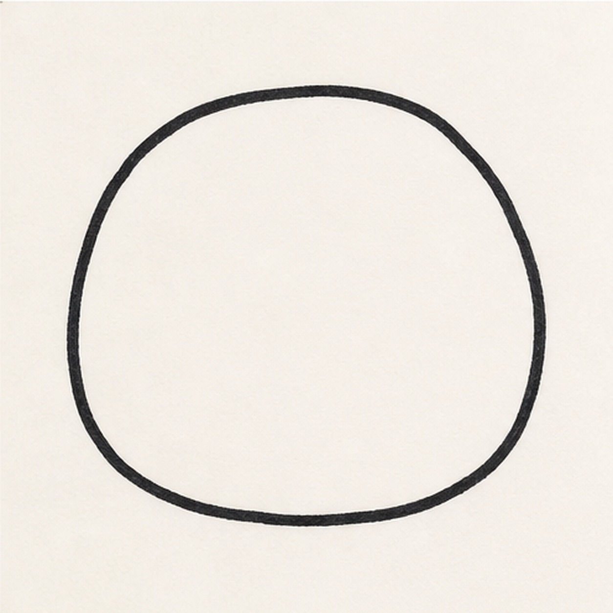
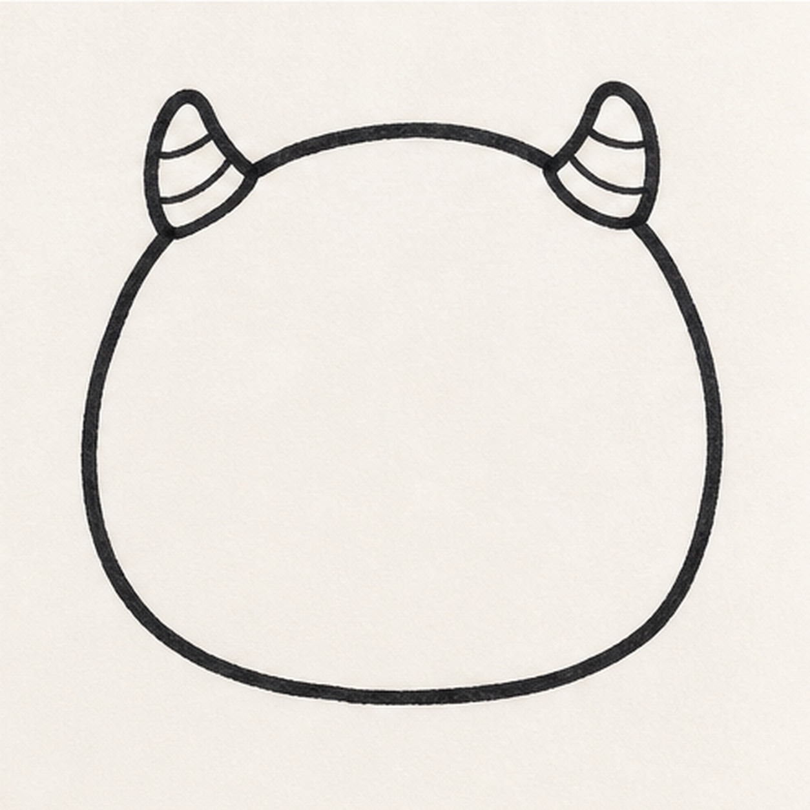
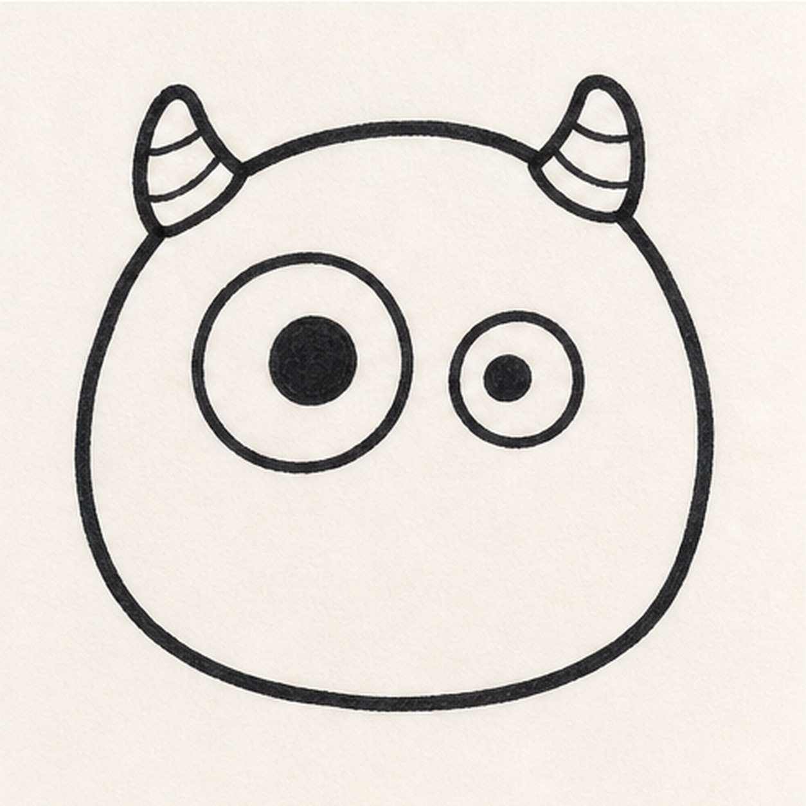
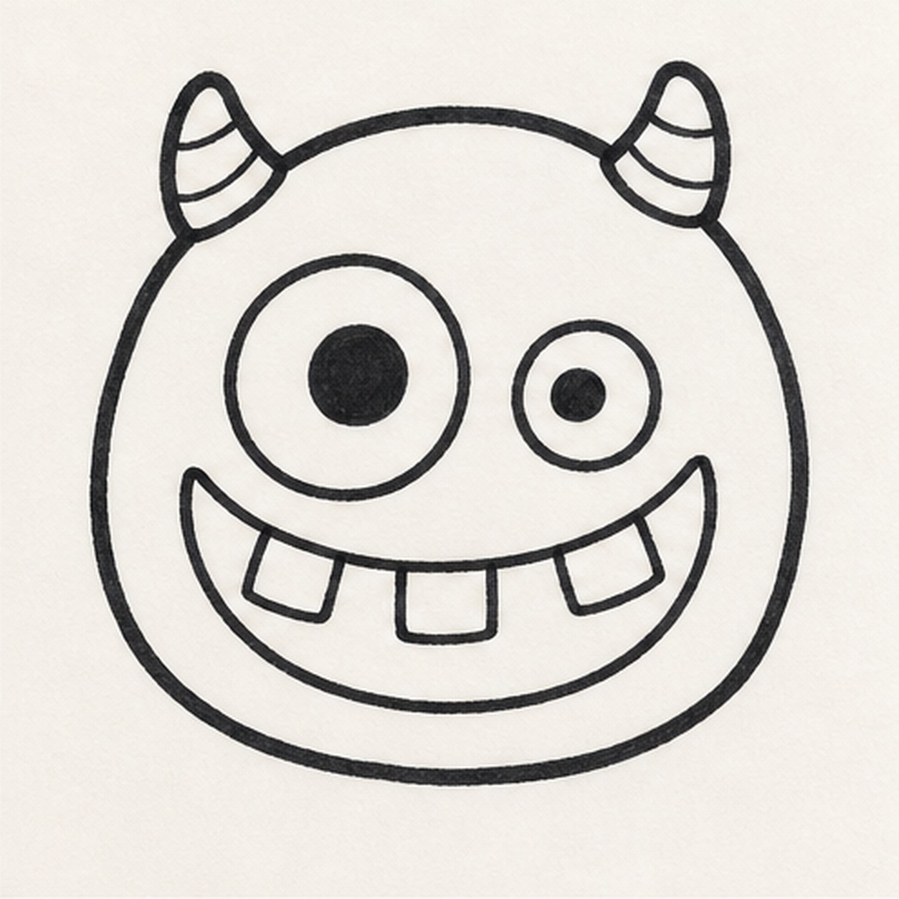
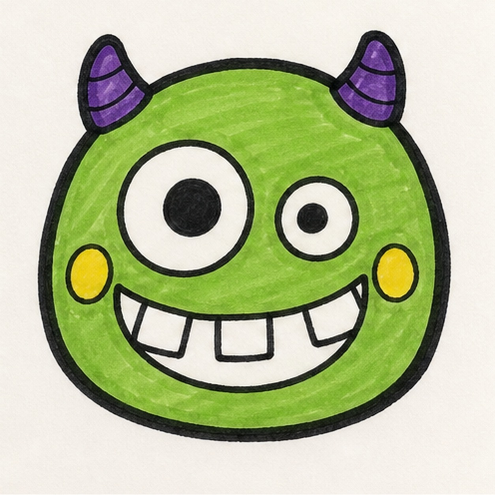

Felt-tip marker mode
Let's doodle a goofy monster face
Treat this as one playful practice round: sketch the idea loosely, simplify the shapes, then commit with confident marker outlines and bright fills.
-
01

Start the head
Draw a round blobby head shape with a slightly flat bottom so the monster feels friendly.
Doodle tip: Keep the outline simple. The expression will make it goofy.
-
02

Add the horns
Place two small rounded horns on top of the head and add a couple of curved bands inside them.
Doodle tip: Make the horns short and chunky. Long sharp horns will make the face feel scarier.
-
03

Make the eyes uneven
Draw one large eye and one smaller eye, then fill the pupils with black marker.
Doodle tip: The uneven sizes are the joke. Do not try to make them perfectly symmetrical.
-
04

Draw the toothy grin
Add a wide curved mouth and break the smile into a few simple square teeth.
Doodle tip: Leave white paper inside the teeth. Clean tooth shapes help the grin read fast.
-
05

Add spots and color
Add round cheek spots, thicken the black outline, fill the head green, color the horns purple, and make the spots yellow.
Doodle tip: Color in one direction where you can. Visible marker streaks are part of the Doodlea look.
-
06
Wake up the expression
Thicken the head, horn, eye, and grin lines, deepen the green and purple fills, and add tiny highlights to the eyes and teeth.
Doodle tip: Do not add a body or background in the final pass. Change the horns, teeth, or colors if you like, but keep the finish focused on the face.